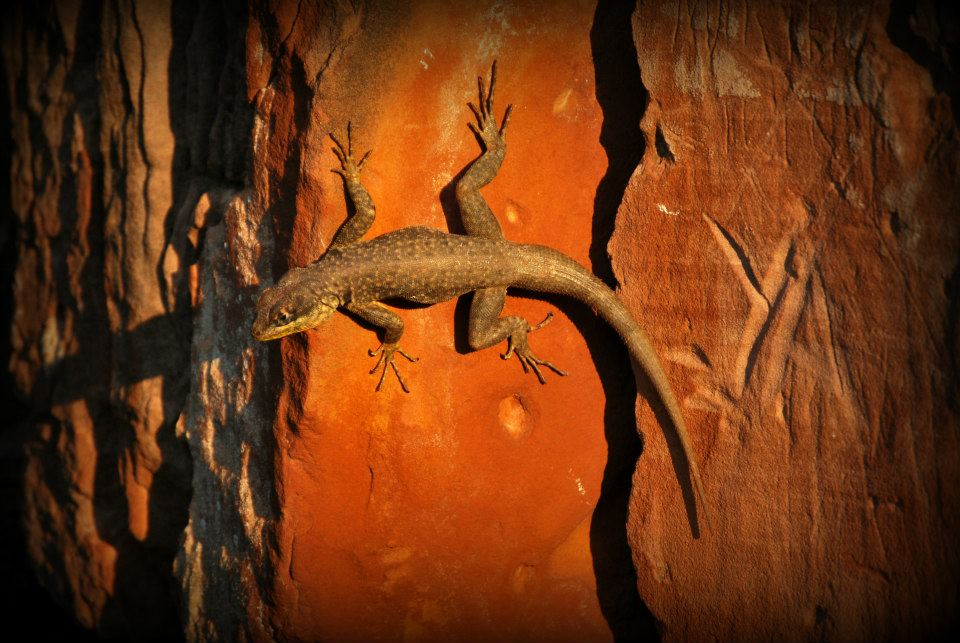

ANTECEDENTES
Desde el año 2006 la Fundación Guaraní realizó actividades de capacitación: Cursos de capacitación, charlas, talleres y debates acerca de temas como Violencia, Familia, adicciones
Fortalecimiento del capital social y humano- Pro. Me. Ba. “La olla y otros” concurso público nacional n° 009/2009: BID 1842 OC-AR. 2009. También desarrolló el trayecto de Formación en políticas para erradicar el trabajo infantil: Res. Desarrollo humano n° 1006/10. Pcia de ctes.2010. En el año 2011 llevó adelante el Programa integral formativo sobre niñez y adolescencia. Disp. 118/11. Adhesión de la subsecretaría de acción social de la Provincia de corrientes.
Nordeste Argentino
La región Nordeste de Argentina está situada en la parte nororiental del país, en la frontera con Paraguay, Brasil y Uruguay. La región es conocida por su clima subtropical, su rica biodiversidad y su vibrante cultura guaraní.
Tiempo
Es el momento de la búsqueda, del regreso a la tierra para volver a energizarse e ir a las estrellas
Somos
somos una fugacidad de herencias siempre buscando sentido
Reflexión final
somos primates
somos practicantes de programación
Talentos Digitales